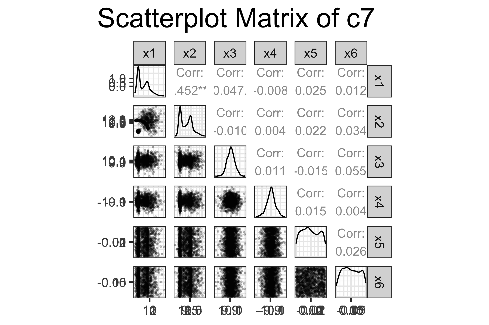
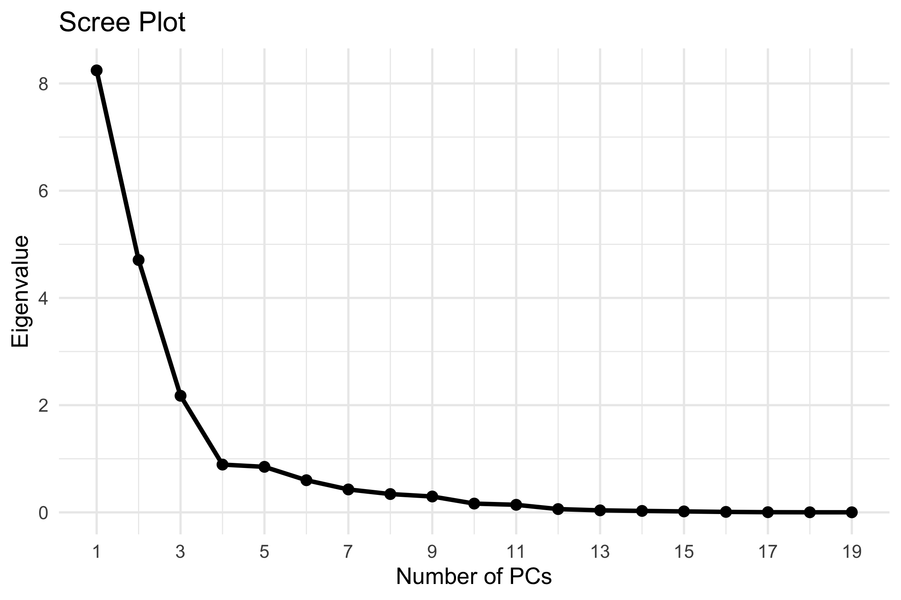

# Setting positive class as Bilbyd_predb <- d_pred |>select(y, pred1, pred2) |>mutate(y =factor(y, levels =c("bilby", "quokka")),pred1 =factor(pred1, levels =c("bilby", "quokka")),pred2 =factor(pred2, levels =c("bilby", "quokka")))# Confusion matrix in standard form - model 1cm <- d_predb |>count(y, pred1) |>group_by(y) |>mutate(cl_acc = n[pred1==y]/sum(n)) cm |>pivot_wider(names_from = pred1, values_from = n)
# A tibble: 2 × 4
# Groups: y [2]
y cl_acc bilby quokka
<fct> <dbl> <int> <int>
1 bilby 0.75 18 6
2 quokka 0.8 6 24
Code
# Confusion matrix in standard form - model 2cm2 <- d_predb |>count(y, pred2) |>group_by(y) |>mutate(cl_acc = n[pred2==y]/sum(n)) cm2 |>pivot_wider(names_from = pred2, values_from = n)
# A tibble: 2 × 4
# Groups: y [2]
y cl_acc bilby quokka
<fct> <dbl> <int> <int>
1 bilby 0.917 22 2
2 quokka 0.633 11 19
Model Metrics
Code
# Metrics - Model 1# Accuracyacc_pred1 <-accuracy(d_predb, y, pred1) |>pull(.estimate)# Balanced Accuracybacc_pred1 <-bal_accuracy(d_predb, y, pred1) |>pull(.estimate)# True Positive Rate (TPR)tpr_pred1 <-sens(d_predb, y, pred1) |>pull(.estimate)# True Negative Rate (TNR)tnr_pred1 <-specificity(d_predb, y, pred1) |>pull(.estimate)# Metrics - Model 2# Accuracyacc_pred2 <-accuracy(d_predb, y, pred2) |>pull(.estimate)# Balanced Accuracybacc_pred2 <-bal_accuracy(d_predb, y, pred2) |>pull(.estimate)# True Positive Rate (TPR)tpr_pred2 <-sens(d_predb, y, pred2) |>pull(.estimate)# True Negative Rate (TNR)tnr_pred2 <-specificity(d_predb, y, pred2) |>pull(.estimate)# Tibble with metrics for both modelsmetrics_table <-tibble(Metric =c("Accuracy", "Balanced Accuracy", "True Positive Rate (TPR)", "True Negative Rate (TNR)"),Model_1 =round(c(acc_pred1, bacc_pred1, tpr_pred1, tnr_pred1), 4),Model_2 =round(c(acc_pred2, bacc_pred2, tpr_pred2, tnr_pred2), 4))metrics_table |>kable(caption ="Model Metrics", align ="lcc") |>kable_styling(bootstrap_options =c("striped", "hover", "condensed"), full_width = F, position ="center", font_size =14, stripe_color ="gray!20" )
Model Metrics
Metric
Model_1
Model_2
Accuracy
0.7778
0.7593
Balanced Accuracy
0.7750
0.7750
True Positive Rate (TPR)
0.7500
0.9167
True Negative Rate (TNR)
0.8000
0.6333
a. TRP and TNR
Model 2 has a higher True Positive Rate (0.9167), making it better at detecting bilbies. Model 1 has a higher True Negative Rate (0.80), meaning it’s better at correctly identifying quokkas. This reflects a trade-off: Model 2 is more sensitive, while Model 1 is more specific.
b. Accuracy and Balanced Accuracy
For both models, accuracy measures overall correctness, considering all predictions, whereas balanced accuracy focuses on individual class performance. It calculates the average of the True Positive Rate (TPR) and True Negative Rate (TNR), which gives equal importance to each class. This is especially useful in cases like ours, where the dataset is imbalanced—there are more quokkas (30) than bilbies (24).
In Model 1, the accuracy (77.78%) and balanced accuracy (77.5%) are nearly identical, with only a small difference of 0.28%. This suggests that the model performs evenly across both classes without a strong bias toward the majority class (quokkas). The small gap between the two metrics indicates that Model 1 handles the class imbalance well, making fair predictions for both classes.
On the other hand, Model 2 shows a lower accuracy (75.93%) but a higher balanced accuracy (77.5%), with a difference of 1.57%. This suggests that while Model 2’s overall performance is slightly weaker, it does a better job of predicting the minority class (bilbies). The larger difference between accuracy and balanced accuracy points to the model’s ability to focus more on fairness, ensuring better representation for both classes, even though overall accuracy is reduced.
c. Threshold for Bilby and Quokka
The predicted classes in this dataset were determined using a threshold of 0.5. This means that if the probability for bilby was 0.5 or higher, the model predicted the class as bilby, and if the probability for quokka was greater than 0.5, it predicted quokka. While this threshold is a standard choice in binary classification problems, its effectiveness might depend on the balance of the classes and the specific objectives of the model.
Given that the dataset is imbalanced, with more quokkas than bilbies, this threshold may not be the best fit. To fine-tune the model, we could experiment with different thresholds, which might improve predictions, especially for the minority class (bilby). ROC curves can give us a clearer picture of how the model performs across different threshold values, helping to identify a better balance between sensitivity and specificity for both classes.
d. ROC Curves
Code
d_pred$y <-factor(d_pred$y, levels =c("bilby", "quokka"))roc_curve(d_pred, y, bilby1) |>autoplot() +ggtitle("ROC Curve for Model 1")
Code
roc_curve(d_pred, y, bilby2) |>autoplot() +ggtitle("ROC Curve for Model 2")
Code
md1 <-roc_auc(d_pred, y, bilby1)md2 <-roc_auc(d_pred, y, bilby2)# Create a table with ROC AUC values for both modelsauc <-tibble(Model =c("Model 1", "Model 2"),ROC_AUC =round(c(md1$.estimate, md2$.estimate), 4))auc |>kable(caption ="ROC AUC", align ="lcc") |>kable_styling(bootstrap_options =c("striped", "hover", "condensed"), full_width = F, position ="center", font_size =14, stripe_color ="gray!20" )
ROC AUC
Model
ROC_AUC
Model 1
0.8354
Model 2
0.7597
ROC curves were generated for both models using predicted probabilities for the bilby class, treated as the positive class. The ROC curve plots the true positive rate (TPR) against the false positive rate (FPR) across different thresholds, offering an overall view of model performance.
Model 1 demonstrates stronger distinction between the classes, with a ROC curve that lies above that of Model 2 across most thresholds. This is confirmed by its higher AUC of 0.8354, indicating that Model 1 has an 83.5% chance of ranking a randomly chosen bilby higher than a randomly chosen quokka. In contrast, Model 2’s AUC is 0.7597, suggesting noticeably weaker separation.
While neither curve shows the ideal shape of a near-vertical rise followed by a flat line along the top (indicating perfect classification), Model 1 is clearly more effective across a range of thresholds. Its curve achieves a better balance between sensitivity and specificity and maintains higher TPR at comparable FPRs. Model 2’s curve, closer to the diagonal line, shows more overlap between the two classes less certainty in distinguishing between them.
Model 1 consistently outperforms Model 2, both visually and statistically, and is the stronger choice when evaluating overall classification performance based on ROC analysis.
# Scatterplot matrix# Customising the size of the pointscustom_lower <-function(data, mapping, ...) {ggplot(data = data, mapping = mapping) +geom_point(alpha =0.2, size =0.4, color ="black")}ggpairs(c7,lower =list(continuous = custom_lower),title ="Scatterplot Matrix of c7")

The scatterplot matrix of the c7 dataset reveals several key patterns. The x1 vs x2 plot shows a distinct curved, multimodal structure, suggesting three to four clusters that aren’t linearly separable. In contrast, x3 vs x4 forms a tight, unimodal cluster centered in the plot, indicating a single group with no visible substructure or correlation.
The x1 vs x4 and x2 vs x4 plots display a gradual spread of points leading into a denser region, reflecting a skewed or narrowing distribution rather than distinct groupings. x1 vs x3 and x2 vs x3 show some spread with slight tapering, but no clear separation. Most variable pairs exhibit weak or no linear relationships, with only x1 and x2 showing moderate nonlinear association.
Variables like x5 and x6 show limited variation, suggesting they contribute little to the dataset’s effective dimensionality. Mild outliers appear in dimensions involving x1, x2, and x3, though none are extreme. Overall, the matrix suggests overlapping contributions across variables and a non-linear underlying structure.
The grand tour provided a more complete view of the structure within the c7 dataset. Across different projections, approximately three to four clusters were consistently visible, although their separation varied depending on the viewing angle.
In certain projections, the clusters appeared well-separated, while in others they overlapped, suggesting that their distinction is not easily captured in low-dimensional views. Some clusters appeared compact, while others were elongated or curved, indicating variation in spread and shape across dimensions.
No extreme outliers were observed—only a few points near the cluster edges occasionally drifted outward but returned as the view rotated. The tour also highlighted that some variables contributed more to revealing the structure, with projections involving x1 and x2 showing clearer separation, while x5 and x6 appeared less informative. The remaining variables (x3 and x4) showed moderate influence, occasionally contributing to the separation of certain clusters depending on the projection.
Overall, the tour confirmed that the dataset has a nonlinear and multidimensional structure, which becomes more noticeable when viewed dynamically through different projection views.
The UMAP projection showed three to four clusters with different shapes. One cluster was clearly separated on the far left, while the right side formed a curved, spread-out structure instead of a tight group. Some clusters were more compact than others, suggesting differences in how tightly the points are grouped. This kind of layout points to a nonlinear structure, where the clusters aren’t aligned along simple axes. There were no strong outliers, as all the points stayed fairly close to the main formations. UMAP made it easier to see both the smaller groupings and the overall arrangement, which lines up with what was seen in the tour and scatterplot matrix.
Dimension reduction
Code
# Load the dataengwt20 <-read.csv("engwt20.csv")engwt20 |>slice_head(n=3)
Based on the PCA results, the first two principal components (PC1 and PC2) explain 43.4% and 24.8% of the variance, respectively. Together, they account for 68.2% of the total variance in the dataset. This indicates that while these two components capture a significant portion of the variability, there is still a considerable amount of information contained in the remaining components. The third component (PC3) explains an additional 11.4% of the variance, bringing the cumulative explained variance to 79.6%. This suggests that while the first two components provide a good overview, including the third component would enhance the representation of the data.
Biplot
Code
# Create data frame with PCA scores (PC1 and PC2) and player nameseng_pca_scores <-as_tibble(pca_res$x[, 1:2]) %>%mutate(Player = engwt20$Player)# Create data frame with PCA loadings (eigenvectors)eng_pca_loadings <-as_tibble(pca_res$rotation[, 1:2]) %>%mutate(origin =0,variable =colnames(data_criket),PC1s = PC1 * (pca_res$sdev[1]^2*2.5),PC2s = PC2 * (pca_res$sdev[2]^2*2.5) )# Create biplotggplot() +geom_segment(data = eng_pca_loadings, aes(x = origin, xend = PC1s, y = origin, yend = PC2s), colour ="orange") +geom_text(data = eng_pca_loadings, aes(x = PC1s, y = PC2s, label = variable),colour ="orange", nudge_x =0.7) +geom_point(data = eng_pca_scores, aes(x = PC1, y = PC2)) +geom_text(data =filter(eng_pca_scores, abs(PC2) >1.3),aes(x = PC1, y = PC2, label = Player), nudge_y =0.15, nudge_x =-0.5, size =3) +xlab("PC1") +ylab("PC2") +ggtitle("Biplot of First Two Principal Components (engwt20)") +theme_minimal()
The biplot displays the projection of players and performance variables onto the first two principal components, which together explain 68.2% of the total variance in the dataset.
PC1 – Batting Performance (43.4%) PC1 reflects batting strength, as variables such as RunsScored, BattingAverage, Fifties, and HighScore point strongly to the left. Players like DN Wyatt, TT Beaumont, and HC Knight, known for their batting performance, appear on the negative end of PC1.
PC2 – Bowling Performance (24.8%) PC2 captures bowling performance, with variables like Wickets, Overs, and Maidens pointing upward. Bowlers such as Sophie Ecclestone, Anya Shrubsole, and K Sciver-Brunt are positioned higher along this axis.
Structure and Interpretation Longer arrows indicate stronger contributions to the PCs. Batting-related variables cluster together, as do bowling stats, clearly separating players by role. Players near a particular arrow tend to excel in that area, while those near the origin are more balanced.
The biplot effectively distinguishes between batting and bowling specialists, providing insight into individual player strengths based on their positioning relative to performance metrics.
Scree Plot
Code
# Extract eigenvalueseigenvalues <- pca_res$sdev^2# Create data frame for ggplotscree_df <-tibble(PC =1:length(eigenvalues),Eigenvalue = eigenvalues)# Plot using ggplot2ggplot(scree_df, aes(x = PC, y = Eigenvalue)) +geom_line(color ="black", linewidth =1) +geom_point(color ="black", size =2) +scale_x_continuous(breaks =seq(1, max(scree_df$PC), by =2)) +labs(title ="Scree Plot", x ="Number of PCs", y ="Eigenvalue") +theme_minimal()

An appropriate number of principal components to retain is four. Together, the first four PCs explain approximately 84.3% of the total variance in the dataset (PC1: 43.4%, PC2: 24.8%, PC3: 11.4%, PC4: 4.7%), which is a strong representation of the original data.
The scree plot supports this choice, showing a clear drop in eigenvalues from PC1 to PC4, followed by a noticeable flattening of the curve. This pattern indicates that the first four components capture most of the meaningful structure, while additional components contribute very little. Therefore, retaining four components balances simplification with preservation of important information.
Interpret the PCs As obsersed fromt the biplot earlier, PC1 captures batting ability, with variables like runs scored, batting average, fifties, and high scores contributing most in the negative direction. Players with lower PC1 scores — such as DN Wyatt, TT Beaumont, and HC Knight are positioned on the left side of the biplot, consistent with their strength as top-order batters.
PC2 reflects bowling performance, driven by variables like wickets, overs bowled, maidens, and four-wicket hauls. Players like Sophie Ecclestone, Anya Shrubsole, and K Sciver-Brunt rank higher on this axis, highlighting their roles as frontline bowlers. Overall, the PCA offers a clear separation between batting and bowling specialists, aligning well with known player profiles.
Suggestions to improve analysis
Analyse outliers explicitly: Players like Sophie Ecclestone or K Sciver-Brunt dominate multiple performance categories. Applying PCA or visualising outliers separately could help uncover patterns among the rest of the players who may otherwise be overshadowed.
Separate batting and bowling PCA: Analyzing batting and bowling stats separately would provide clearer insights, especially since not all players contribute equally in both areas.
New variable- CareerLength: The dataset contains Start and End years for each player. Creating a CareerLength variable (End - Start) and including it in PCA or as a colour group would help identify whether performance trends are related to experience or era.
Zero contribution: Several players have zero values in either batting or bowling columns. Instead of including all players in a single PCA, filtering out players who never bowled or batted, and carrying out the analysis might provide alternative perspectives.
References
1.Hadley Wickham, Dianne Cook, Heike Hofmann, Andreas Buja (2011). tourr: An R Package for Exploring Multivariate Data with Projections. Journal of Statistical Software, 40(2), 1-18. URL http://www.jstatsoft.org/v40/i02/.
2.Lecture and tuorial notes and codes snippets from ETC3250/5250, 2025, Monash University